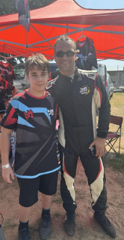

A nevem Lubai Péter István. 14 éves vagyok 2010.július.2-án születtem. Jelenleg a Miskolci SZC Kandó Kálmán Informatikai Technikum-ba járok, ahova nagyon szeretek járni. Szabadidőmben gokartozni, és gépezni szoktam, illetve virtuális versenyezni. A célom az hogy szoftverfejlesztői ágazaton végezzek. Nagyon szerettem a ladákat, illetve a Ladákat, ha meg lesz a jogsim akkor szeretnék is egyett.
